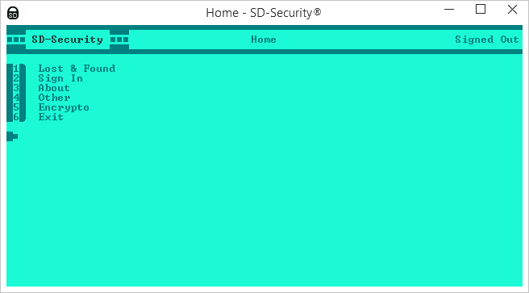
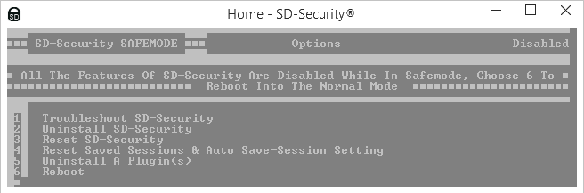

Welcome to SD-Security!

SD-Security (or SDS) is a free open-source security-orientated program for windows, it is also scripted entirely in the MS-DOS batch file language.
SD-Security is rich is features, 90% of them are unique to SDS. SD-Security is updated weekly with new features, plus new apps & plugins weekly too!
HOW TO USE:
SD-Security is a command-line application, so its basically the same as using CMD. But here is how to anyway:
- You never need to use the mouse, when using SD-Security
- To navigate SDS you just enter the number of the option. For example to select 'Other' you would enter the number beside the option (4) and then press enter
- To enter usernames/password you just type it in normally
- To exit SDS, it is recommended you exit using the exit option, not the
 button. If you do exit using the button, then SDS won't load as quick next time and you could lose data
button. If you do exit using the button, then SDS won't load as quick next time and you could lose data - Wherever you see , it means SDS is requesting user input.
- You can't enter any special symbols like '& " |'.This is for security reasons. See here for more details.
- If you modify any files in the SDS_FILES folder, then you could lose you preferences and/or cause SD-Security to crash. See below for more details:
- If SDS Crashes then you can reset SDS. To reset SDS simply boot into safemode by selecting it in the crash helper screen OR by typing SD-Security /safemode into a cmd prompt (shift+right click>Open command window here). When you are in safemode, you can perform a few operations:
